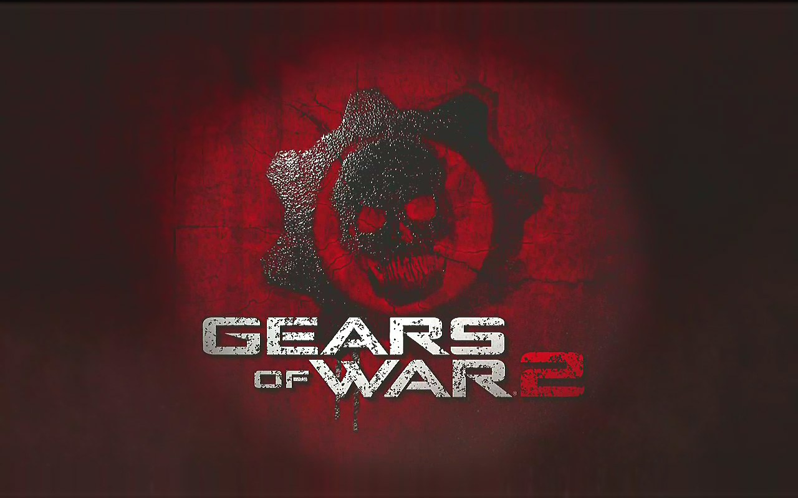
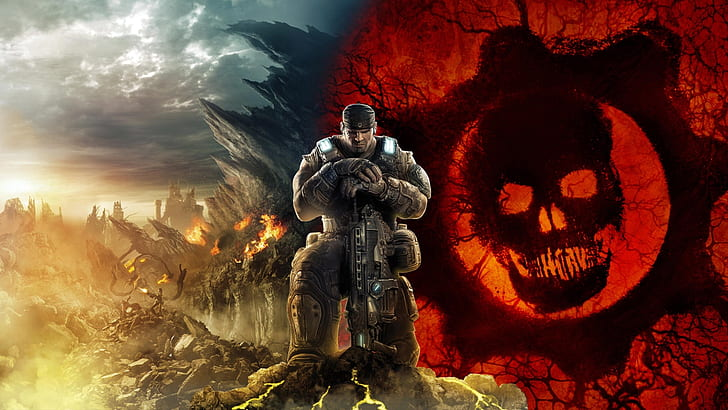
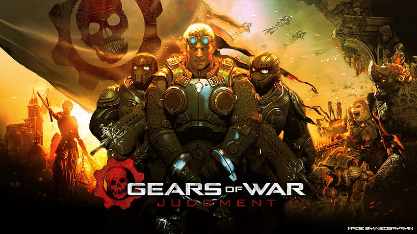
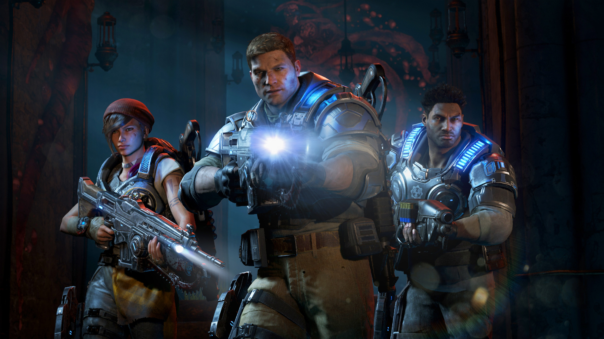
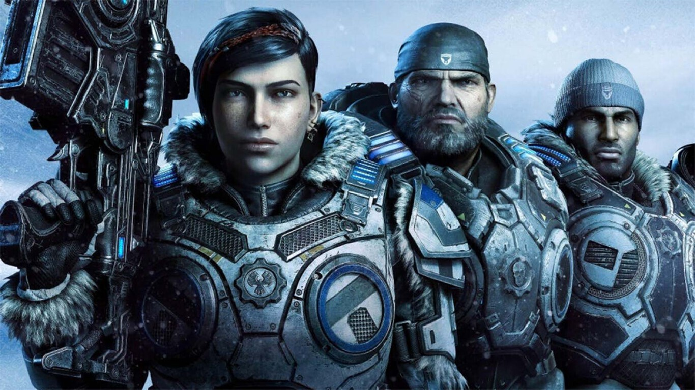

El juego está ambientado en el planeta Sera, donde la humanidad ha sido atacada por una raza subterránea conocida como los Locust. La historia comienza catorce años después del "Emergence Day" (Día de la Emergencia), cuando los Locust emergieron de las profundidades del planeta y arrasaron con las ciudades humanas.
Marcus Fenix, un soldado veterano de la Coalición de Gobiernos Ordenados (COG), ha pasado los últimos cuatro años en prisión por abandonar su puesto en un intento fallido de salvar a su padre. Dom Santiago, su mejor amigo, lo saca de la cárcel y lo reintegra al servicio en el escuadrón Delta.
El objetivo del escuadrón Delta es utilizar la "Resonator", un dispositivo que mapeará los túneles de los Locust, para luego lanzar un ataque con la "Lightmass Bomb" y destruir sus bases. A lo largo de la campaña, Marcus y su equipo luchan contra hordas de Locust en diversos entornos, desde ciudades en ruinas hasta los oscuros túneles subterráneos.
A medida que avanzan, enfrentan a diversos tipos de Locust, incluyendo los peligrosos Berserkers y los imponentes Brumaks. Durante la misión, descubren que los Locust no solo están interesados en destruir a los humanos, sino que también están combatiendo una guerra interna contra una mutación llamada Lambent.
Finalmente, Marcus y su equipo logran detonar la Lightmass Bomb en los túneles Locust, causando una gran explosión y creyendo haber destruido gran parte de la horda. Sin embargo, al final del juego, la Reina Locust promete continuar la lucha, insinuando que la guerra está lejos de terminar.

Gears of War 2 (2008)
En esta secuela, la guerra contra los Locust se intensifica. Los Locust han empezado a hundir ciudades humanas enteras al hacer colapsar las placas tectónicas subterráneas. La COG planea una ofensiva a gran escala para atacar directamente las bases de los Locust en el subsuelo.
Marcus Fenix y Dom Santiago lideran el escuadrón Delta en esta misión. A lo largo de la campaña, Dom está motivado por la búsqueda de su esposa María, quien desapareció durante el Emergence Day. El escuadrón Delta descubre que los Locust están utilizando una criatura gigante llamada el Riftworm para crear túneles y hundir ciudades.
El juego presenta momentos emocionales intensos, especialmente cuando Dom finalmente encuentra a María, solo para descubrir que ha sido torturada y mentalmente destruida por los Locust. Dom se ve obligado a poner fin a su sufrimiento, lo que añade una capa profunda de tragedia personal a la historia.
La misión culmina con una batalla épica en la ciudad subterránea de Nexus, el corazón de la civilización Locust. Marcus y Dom descubren que los Locust están tratando de usar la imulsión (un líquido brillante y mutagénico) para crear soldados Lambent, una forma mutada de Locust que son aún más peligrosos.
El juego termina con la detonación de una bomba de imulsión, que causa una reacción en cadena y destruye gran parte del territorioLocust. Sin embargo, la victoria es agridulce, ya que queda claro que los Locust y los Lambent siguen siendo una amenaza significativa.

Gears of War 3 (2011)
El tercer juego concluye la trilogía original. Después de los eventos de Gears of War 2, la Coalición de Gobiernos Ordenados (COG) ha colapsado y los sobrevivientes humanos se han dispersado en asentamientos aislados. La historia sigue a Marcus Fenix, Dom Santiago, Anya Stroud y el resto del escuadrón Delta mientras enfrentan las amenazas duales de los Locust y los Lambent.
La narrativa se centra en la búsqueda de Marcus para encontrar a su padre, Adam Fenix, quien se creía muerto pero resulta estar vivo y trabajando en una solución para la plaga Lambent. Los Lambent han evolucionado y ahora representan una amenaza tanto para los humanos como para los Locust.
A lo largo de la campaña, el escuadrón Delta sufre pérdidas significativas. En uno de los momentos más emotivos de la serie, Dom sacrifica su vida para salvar a sus compañeros, estrellando un vehículo lleno de explosivos contra una horda de Lambent.
El clímax del juego tiene lugar en la ciudad de Azura, donde Adam Fenix ha estado trabajando en una cura para la imulsión. Adam revela que la imulsión es un organismo parasitario y su dispositivo podría erradicarlo, matando a todos los infectados, incluidos los Locust y los Lambent.
En la batalla final, Marcus y su equipo defienden a Adam mientras el dispositivo se activa. La Reina Locust es asesinada, y la mayoría de los Locust y Lambent son exterminados. Adam también muere en el proceso, dejando a Marcus devastado pero con la esperanza de un futuro mejor para la humanidad.

Gears of War: Judgment (2013)
Este juego es una precuela, ambientada 14 años antes del primer Gears of War. La historia sigue al Escuadrón Kilo, liderado por Damon Baird y Augustus Cole, quienes están siendo juzgados por un tribunal militar COG por desobedecer órdenes durante los primeros días de la guerra contra los Locust.
A través de una serie de flashbacks, el juego revela los eventos que llevaron al tribunal. El Escuadrón Kilo, que también incluye a Sofia Hendrick y Garron Paduk, descubre que los Locust están planeando un ataque devastador contra la ciudad de Halvo Bay utilizando una nueva arma, el Hammer of Dawn.
Desobedeciendo órdenes directas, el escuadrón decide usar el Hammer of Dawn para destruir la amenaza Locust, a pesar de las bajas civiles que esto podría causar. La campaña alterna entre la defensa de su decisión en el tribunal y las misiones de combate que llevaron a la acción controvertida.
Al final del juego, se revela que las acciones del Escuadrón Kilo salvaron miles de vidas al destruir un gran contingente de Locust. El tribunal finalmente exime al escuadrón de sus cargos, reconociendo que sus decisiones, aunque no autorizadas, fueron cruciales para la supervivencia de Halvo Bay.

Gears of War 4 (2016)
Ambientado 25 años después de los eventos de Gears of War 3, este juego introduce a una nueva generación de personajes. JD Fenix, el hijo de Marcus Fenix, es el protagonista principal. Junto a sus amigos Kait Diaz y Del Walker, JD se enfrenta a una nueva amenaza conocida como el Enjambre, que parece estar relacionado con los Locust.
La historia comienza con la desaparición de varios habitantes de su aldea, lo que lleva a JD, Kait y Del a investigar. Descubren que el Enjambre está secuestrando personas para convertirlas en monstruos. A medida que avanzan, descubren conexiones con los antiguos Locust y la imulsión.
El trío busca la ayuda de Marcus Fenix, quien ahora vive retirado. Juntos, enfrentan numerosas batallas contra el Enjambre y descubren que Kait tiene una conexión personal con los Locust a través de su madre, Reyna, quien es capturada por el Enjambre.
El clímax del juego ocurre cuando JD, Kait, Del y Marcus intentan rescatar a Reyna y destruyen una de las principales instalaciones del Enjambre. Sin embargo, la madre de Kait muere, revelando que Kait es descendiente de la Reina Locust Myrrah, lo que deja una puerta abierta para futuras revelaciones y conflictos.

Gears 5 (2019)
Gears 5 se centra principalmente en Kait Diaz, quien busca respuestas sobre su conexión con los Locust. Tras los eventos de Gears of War 4, Kait está atormentada por visiones y pesadillas que sugieren una conexión genética con la Reina Locust Myrrah.
La historia sigue a Kait, JD, Del y Marcus mientras intentan descubrir la verdad detrás de sus visiones. Viajan a diversos lugares, incluyendo una instalación antigua de la COG, donde descubren que los Locust fueron creados por la imulsión y experimentos humanos.
Kait se separa del grupo para explorar su herencia y descubre que su abuela era la Reina Myrrah, lo que la convierte en la legítima heredera de los Locust. A medida que Kait explora esta verdad, lucha contra sus propios sentimientos de identidad y lealtad.
El juego presenta múltiples giros narrativos, incluyendo la traición de JD y el conflicto interno dentro del grupo. Al final, Kait debe tomar decisiones difíciles que afectarán el futuro de la humanidad y su propio destino.
La conclusión de Gears 5 deja muchas preguntas abiertas sobre el futuro de Sera y la batalla continua contra el Enjambre, preparando el escenario para futuras entregas en la serie.